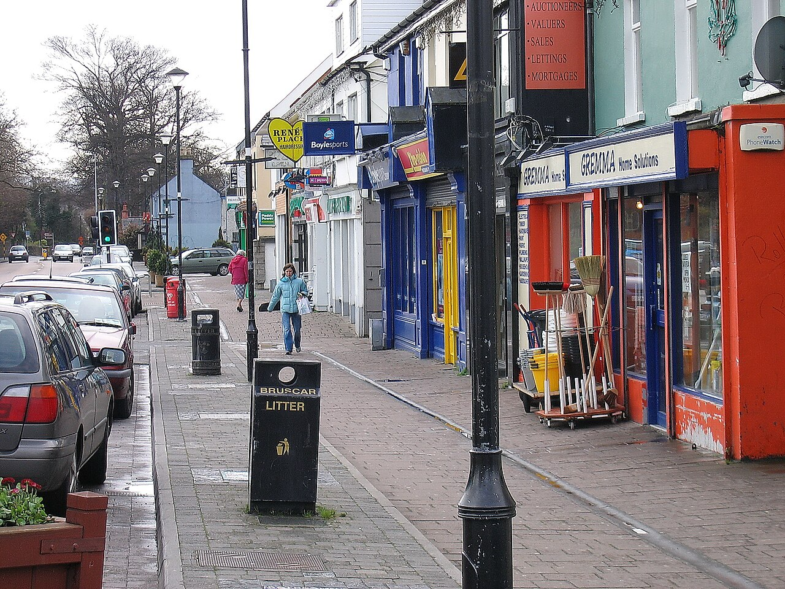

New homes mean new neighbours. What comes with them?
A plain-language look at housing delivery, shared amenities, green space, and the local services residents are watching as Woodbrook grows.
Read the local briefing →A local edition for residents
Woodbrook is growing. This is where neighbours can follow local change, find useful information, show up, and help shape what happens next.

A plain-language look at housing delivery, shared amenities, green space, and the local services residents are watching as Woodbrook grows.
Read the local briefing →Meet nearby residents, discover local groups, and add something useful to the next welcome note.
Join the welcome →Paths, woodland, play, access, and the next public update in one clear record.
Follow the project →One transport update among the wider work of making a complete neighbourhood.
See the update →The community page